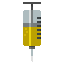
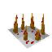
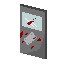

Tutoriel
Principe du jeu
Dans Spread out vous commencez dans un labyrinthe avec un statut sain, au bout de quelques secondes un de vos alliés devient l’infecté. Votre but est de survivre jusqu’à la fin du compte à rebours sans vous faire infecter par les zombies. A votre disposition vous avez des différents objets qui apparaîtront au fur et à mesure du temps, ces objets vous aideront à survivre le plus longtemps possible. Votre avantage comparé aux infectés c’est que vous pouvez vous différencier par rapport aux joueurs grâce à des émojis qui apparaîtront au-dessus de vous. Si vous devenez infecté vous avez toujours un moyen de gagner, votre objectif est de pouvoir gangrener le plus de personnes possibles, celui qui aura le meilleur score gagnera et pourra donc s’échapper. Mais en étant infecté votre vision s'est dégradée et maintenant vous ne pouvez plus vous repérer sur la carte, à vous de jouer pour éviter la confusion.
Règle du jeu
Lorsque vous vous faites touché par infecté vous devenez vous même infecté
vous pouvez ramasser des items qui vous aideront à survivre
En tant qu'infecté, plus vous contaminé des civiles plus vous gagnez de points
Contrôles
Les contrôles reprennent ceux des jeux vidéos sur mobiles, il s'agit d'un joystick basic ainsi que de 2 boutons
• Bouton Radar: vous permet en tant que survivant de vous repérer avec un émoji qui apparaitra au-dessus de votre personnage
• Bouton Objet: Lorsque vous passez sur un items vous le récupérer, et vous pouvez l'utiliser (voir la section item) vous ne pouvez avoir qu'un seul item à la fois
Items
Adrenaline

L'adrenaline vous augmente votre vitesse de déplacement pendant 5 secondes
Piège à picot

Le piège à picot ralenti l'infecté qui passe dessus pendant 5 secondes
Bouclier

Le bouclier vous rend invincible pendant 5 secondes